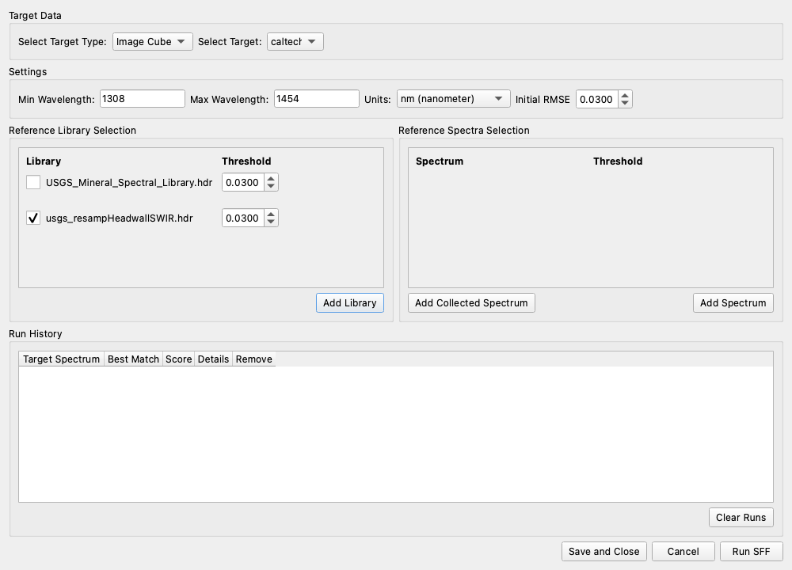
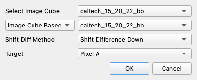

7. Finding a Known Material#
Goal: go from “what is in this scene?” to “where is this specific substance?” using WISER’s four matching and unmixing tools, and know which one to reach for.
Data: caltech_15_20_22_bb.hdr — a 20 × 22 pixel, 15-band short-wave
infrared (SWIR) subset (1308–1454 nm) carrying a bad-band list, so you can
see how flagged bands are dropped. Reference spectra from
src/test_utils/test_spectra/usgs_resampHeadwallSWIR.hdr.
Note
This cube is for practicing the mechanics of each tool. Its 1308–1454 nm range straddles the 1400 nm water-vapor absorption, whose core is flagged bad. It contains none of the features that identify minerals, so the results below are not mineral identifications. Run the same steps on a full-range cube for real ones.
Reference: Spectral Angle Mapper, Spectral Feature Fitting, Mixture-Tuned Matched Filter, Linear Unmixing.
Four tools, four questions#
Tool |
Answers |
Needs |
|---|---|---|
Spectral Angle Mapper (SAM) |
Which reference does this pixel most resemble in shape? |
One or more reference spectra |
Spectral Feature Fitting (SFF) |
Do this pixel’s absorption features match the reference’s? |
A reference and a diagnostic wavelength range |
Mixture-Tuned Matched Filter (MTMF) |
How much of this one target is present, against an unknown background? |
One target spectrum |
Linear Unmixing |
What fraction of each of these known materials is in this pixel? |
Endmembers for every material present |
The ordering is roughly “how much you have to know in advance”. SAM asks the least; unmixing asks the most and, in exchange, gives you abundances.
Step 1 — Load the scene and collect spectra#
Choose File ▸ Open… and select
caltech_15_20_22_bb.hdr.If the Dataset Info pane is not showing, click its pane toggle on the Main Toolbar. Expand the dataset, then expand Bands (15). Bands 8 and 9 (1348.5 and 1353.6 nm) end in (bad): the header’s bad-band list flags them. Every tool below drops them automatically.
If the Spectrum Plot pane is not showing, click its pane toggle.
Click three pixels that look different from each other, and click Collect spectrum after each, as in Tutorial 2. Steps 4 and 5 use these as the MTMF target and as unmixing endmembers.
Step 2 — Spectral Angle Mapper#
SAM treats each spectrum as a vector in n-band space and measures the angle between pixel and reference:
Because an angle depends only on direction, SAM ignores brightness. A sunlit and a shadowed patch of the same mineral give the same small angle, which is why it is the usual choice for scenes with topography or uneven illumination. A smaller angle means a better match.
Choose Tools ▸ Data Analysis ▸ Spectral Angle Mapper.

In the Settings section, set Select Target Type: to Image Cube (it starts on Spectrum), then pick your dataset from Select Target: beside it.
Set Min Wavelength: to
1308and Max Wavelength: to1454, and leave Units: on nm (nanometer). The fields start empty and the run will not start without them. Here the range covers the whole cube; on a full-range cube it decides whether you compare one absorption or everything at once.Reference Library Selection already lists WISER’s bundled
USGS_Mineral_Spectral_Library.hdr, ticked. Click Add Library, selectsrc/test_utils/test_spectra/usgs_resampHeadwallSWIR.hdr, and untick the bundled library, so the output has one band per Headwall reference. A library loaded in the Spectrum Plot does not appear in this list.Leave Initial Angle (°) at its default of 5.
Click Run SAM.
Choosing Spectrum instead of Image Cube in the first step compares a single spectrum against the references and returns a ranked table, which is a fast way to identify a spectrum you just collected. Choosing individual minerals and setting a separate threshold per reference are covered in Spectral Angle Mapper.
Two datasets come back, one band per reference:
SAM Angle, Img: <source>— the angle in degrees at every pixelSAM CLS, Img: <source>— a boolean map ofangle < threshold
Each band is named after its reference, such as
Spec: kaolini1.spc Kaolinite CM9. Switch
to the angle image with Select dataset to view, open the Band chooser,
select Grayscale, pick one mineral’s band from Grayscale Band, and tick
Use a colormap. Set a stretch before trusting the classification.
Interpretation
You choose the threshold, and the angle image shows you what that choice does. A classification map only tells you which side of 5° each pixel fell on; the angle image tells you whether a pixel was just over the line or nowhere near it.
Every reference is interpolated onto the target’s wavelength grid before the comparison, so a library resampled to a different sensor still works.
Step 3 — Spectral Feature Fitting#
SFF asks a narrower question: forget the overall spectrum, do the absorption features line up?
It continuum-removes both spectra, dividing out the smooth upper envelope so only the dips remain. It then inverts the result so absorptions become peaks, and finds by least squares the single scale factor that best matches their depths.
Choose Tools ▸ Data Analysis ▸ Spectral Feature Fitting. The inputs mirror SAM’s and are listed in Spectral Feature Fitting.


Set the target type, dataset, wavelength range and library exactly as for SAM: Image Cube, your dataset, 1308 to 1454 nm, and the Headwall library added with Add Library in place of the bundled one. SFF continuum-removes over exactly this window.
Leave Initial RMSE at its default of 0.03.
Click Run SFF.
Note
Set the wavelength range to bracket the feature you care about. SFF over a full spectral range averages your diagnostic band in with everything else. Over a window around a known absorption it is far more specific than SAM. On a full-range cube the usual targets are kaolinite 2160/2200 nm, alunite 2170 nm, calcite 2340 nm, gypsum 1750 nm and chlorophyll 670 nm, all of which sit beyond this tutorial’s 1308–1454 nm subset, so here the window simply covers the whole cube.
Three outputs, one band per reference:
SFF RMSE, Img: <source>— root-mean-square fit error; lower is betterSFF SCALE, Img: <source>— fitted feature depth, loosely an abundance indicatorSFF CLS, Img: <source>— booleanRMSE < threshold
Read RMSE and SCALE together. A low RMSE with a near-zero scale is a good fit to a feature that is not there.
Step 4 — Mixture-Tuned Matched Filter#
MTMF is for the case where you know your target but nothing about the background, the usual situation in target detection.


Choose Tools ▸ Data Analysis ▸ Mixture Tuned Matched Filter.
Select Image Cube: the dataset to search.
In the noise-method dropdown below it, choose Image Cube Based. It starts on ROI Based, which needs an ROI this scene does not have. Image Cube Based estimates noise from the scene itself; leave Shift Diff Method at Shift Difference Down.
Target: the spectrum to detect. The list holds the spectra you collected in Step 1, not library entries; choose one of them.
Click OK.
If you have a dark frame, or a region you know is background, the other two noise methods use it instead. They are described in Mixture-Tuned Matched Filter.
Internally MTMF runs a full MNF (Tutorial 6) so the noise is white, projects the target into that space, and computes a matched-filter score per pixel: near 0 for background, near 1 for a pure target pixel. It also computes each pixel’s infeasibility: how far its spectrum is from any physically plausible mixture of background and target.
Note
A high score alone is not a detection. The matched filter produces false positives on spectra that happen to project well onto the target direction. The mixture-tuning step separates them: a real detection has a high score and low infeasibility. Scoring pixels without checking feasibility is the classic way to over-report a target.
Two float32 datasets come back per target, both with nodata as NaN:
MTMF [target]: <source> holds the matched-filter score and
IF [target]: <source> holds the infeasibility. Read them together: a high
score is only believable where the same pixel in IF is low.
Step 5 — Linear Unmixing#
Unmixing assumes each pixel is a weighted sum of a few pure endmember spectra and solves for the weights.

Choose Tools ▸ Data Analysis ▸ Linear Unmixing.
Input Dataset: the cube.
Click Add Collected Spectrum and pick at least two of the spectra you collected in Step 1. They make up the Endmembers list.
Optionally tick Sum to Unity. This softly forces each pixel’s abundances to add to 1, which is right when you believe your endmembers cover everything in the scene and wrong when they do not.
Click OK.
The result carries one abundance band per endmember, in the order listed, plus a final RMSE band.
Note
Read the RMSE band first. It is the per-pixel reconstruction error, and it tells you where your endmember set fails to explain the data — usually because a material is present that you did not include. Abundances in high-RMSE areas are not meaningful.
Importing endmembers from a file, the Sum to Unity weight, and how bad bands are handled are described in Linear Unmixing.
Choosing between them#
You have a spectrum and want to know what it is → SAM in Spectrum mode against a library, then read the ranked table.
You want a map of where a material is, illumination varies, and you have no background information → SAM, inspecting the angle image before thresholding.
You know the diagnostic absorption and want specificity → SFF over a narrow window.
You have one target, an unknown background, and want an abundance-like score → MTMF, checking feasibility.
You have endmembers for everything and want fractions → Linear Unmixing, checking RMSE.
None of these tools proves a material is present. They rank pixels by how well they match a hypothesis you supplied. Confirmation comes from the spectrum itself. Go back to the Spectrum Plot, look at the pixels a tool flagged, and check that the absorptions you expect are actually there.
What you can now do#
Run all four matching and unmixing tools
Pick the one that suits what you know going in
Set a wavelength window around a diagnostic feature
Read the diagnostic outputs (angle, RMSE, infeasibility) rather than only the classification
Next: Tutorial 8 takes the same tools to a laboratory cube.